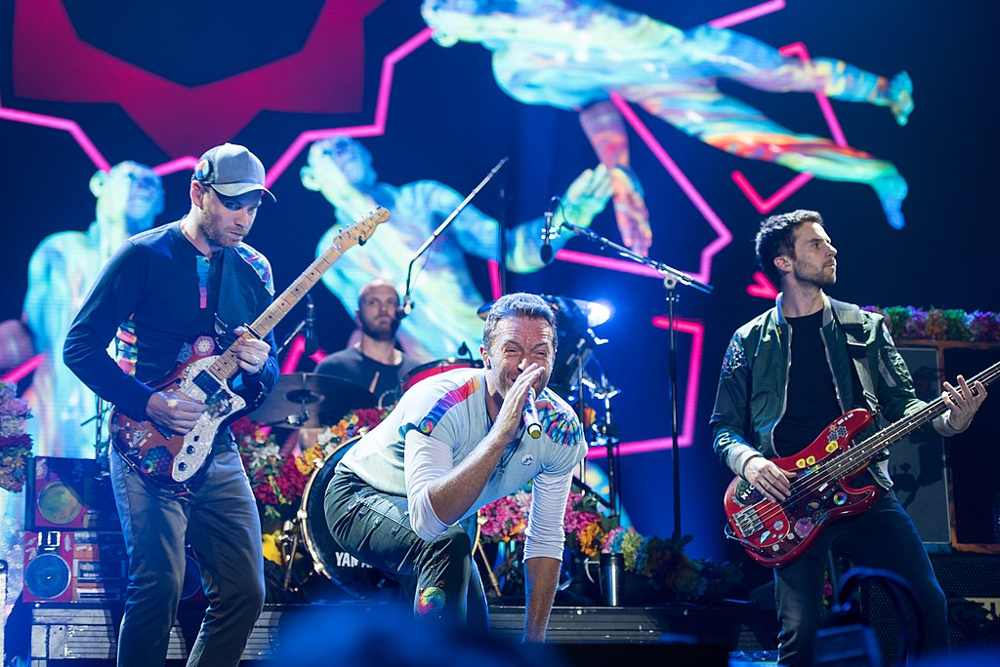

Coldplay are a British rock band that was formed in London in 1996. Vocalist and pianist Chris Martin, guitarist Jonny Buckland, bassist Guy Berryman, and drummer Will Champion met at University College London and began playing music together from 1996 to 1998, first calling themselves Pectoralz and then Starfish before finally changing their name to Coldplay. Creative director and former manager Phil Harvey is often referred to as the fifth member by the band. After changing their name to Coldplay, they recorded and released two EPs: Safety in 1998 and The Blue Room in 1999. The latter was their first release on a major record label, after signing to Parlophone.
Coldplay achieved worldwide fame with the release of the song "Yellow" in 2000, followed in the same year by their debut album Parachutes, which was nominated for the Mercury Prize. The band's second album, A Rush of Blood to the Head (2002), was released to critical acclaim and won many awards, including NME's Album of the Year. Their next release, X&Y, the best-selling album worldwide in 2005, received mostly positive reviews, though some critics felt it was inferior to its predecessor. Their fourth studio album, Viva la Vida or Death and All His Friends (2008), the best-selling album worldwide of 2008, was produced by Brian Eno and released to largely positive reviews, earning three Grammy Awards. In October 2011, Coldplay released their fifth studio album, Mylo Xyloto, which topped the charts in over 34 countries, was the UK's best-selling rock album of 2011, and received moderately positive reviews
Their sixth album, Ghost Stories, released in 2014, received mixed reviews and topped several national album charts. The following year the band released their seventh album, A Head Full of Dreams, which reached the top two in most major markets, but received generally mixed reviews. Four years later, in November 2019, they released their eighth album, Everyday Life, which received mainly positive reviews.
Coldplay have won numerous awards throughout their career, including nine Brit Awards, six MTV Video Music Awards, seven MTV Europe Music Awards and seven Grammy Awards from 29 nominations. They have sold more than 100 million records worldwide, making them one of the world's best-selling music artists. The band’s first three albums—Parachutes (2000), A Rush of Blood to the Head (2002), and X&Y (2005)—are among the best-selling albums in UK chart history. In December 2009, Rolling Stone readers voted the group the fourth-best artist of the 2000s.